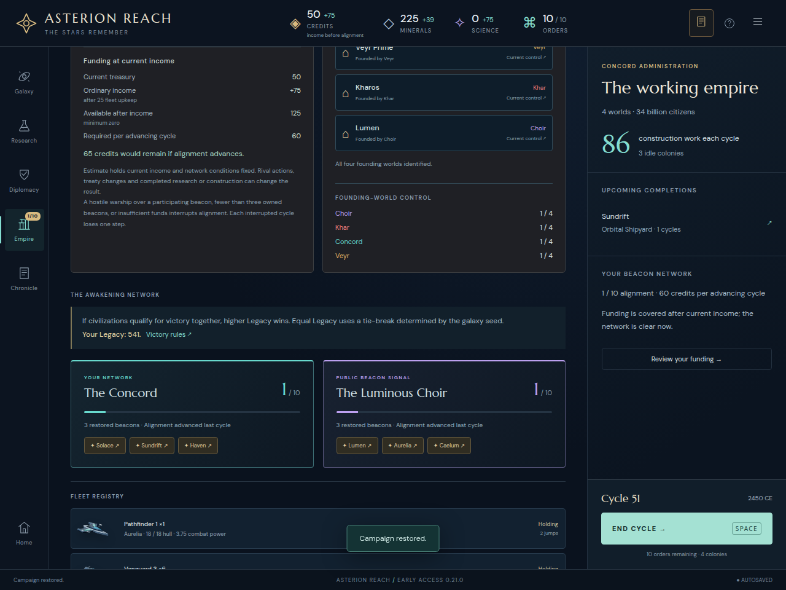

ASTERION REACH · VERSION 0.21
Know what the next command can cost
Alignment funding now separates treasury, ordinary income after upkeep, and the required payment. Invasion forecasts explicitly warn when retaliation destroys the selected formation and prevents capture. Both changes expose existing rules without changing income, payments, combat, random draws or saved data.
Funding at current income
A synthetic copy of actual WATCH51 changes only own treasury from 954 to 50. The old interface said requirements were unmet, although the ordinary next cycle collected 75 income, paid 60 and left 65 while advancing alignment. The new budget shows 50 + 75 − 60 = 65 before commitment.
This projection holds current conditions fixed. Rival actions, treaty changes and completed research or construction can change the result. A separate ordinary trade-expiry diagnostic estimates 999 but finishes at 989 because the expiring treaty reduces income by ten. The interface states this limitation beside the estimate.
A treasury above sixty can still fall short after upkeep. Funded but blockaded or incomplete networks show their structural obstacle without claiming a payment. Finished campaigns show final network information without future funding advice. No private rival resources enter the projection.
Independent initial review covers eleven core fixtures, eleven production views and four exact ordinary-turn comparisons. It found own-network links scrolled past the budget. Corrected links land on the funding heading and result; rival warnings still land on public signals. Final independent follow-up passes nine contexts and thirteen landings at 1280/390 pixels, with unchanged state and no browser errors.

Survival is required for capture
A valid synthetic formation with three hull attacks an eight-defense colony. Its volley removes the defenses, but retaliation destroys it and the colony remains enemy-owned. The forecast now says this directly and shows projected surviving hull; the voluntary attack remains available.
Survival uses the engine's already-computed projected hull. Subtracting rounded display labels is insufficient: 4.04 hull can display four retaliation yet be destroyed after engine rounding. Attack and capture arithmetic is unchanged.
Independent invasion review passes nine production attack cases, four privacy/purity checks, exact result/report/state comparisons against both old and current rules, and exact reloads. An initial narrow driver targeted a hidden desktop control; that failure is preserved before the corrected visible-roster run. This review used the initial production build. Final funding-navigation edits leave invasion rendering, game rules and styling unchanged; source continuity records this boundary.

Integrated acceptance
All 406 rules tests pass, including twelve new funding and eight invasion cases. All 76 distinct browser scenarios pass on the final immutable production build. Shard one initially passed 37 and failed one stale expectation of the old status message; shard two passed 38. Updating that assertion required no product change, and the affected blockade-relief case passed separately. The original failure screenshot and trace remain preserved.
The twelve new browser cases cover income/payment, upkeep shortfall, blocked and missing networks, old and modern endings, private-state invariance, lethal attacks and surviving bombardment/capture. Final JavaScript is 247.51 KB gzip. Root verified 343 independently manifested artifacts, six final funding source pins and eighteen production files, and inspected desktop/narrow budget and invasion screenshots.
Rules log · Initial shard one · Shard two · Corrected assertion · Production/source fingerprints · Build log
Complete hashes. Actual played saves, synthetic derivatives, ordinary-command checks and independent reviews remain separately labeled. Neither finding demonstrates a historical player loss; this stage makes no AI or balance claim.